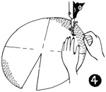

1952—How to Make Hats
by Ruby Carnahan
 Stitched Beret and Matching Bag
Stitched Beret and Matching Bag

MATERIAL REQUIRED FOR BERET AND BAG
- 1 yard of foundation felt
- 1 yard of fabric
- 6 spools of cotton thread for stitching
- 3/4 yard of ribbon for headband
- Use Beret pattern page 85.
FOUNDATION FOR BERET
Felt must be shrunk before using. This is done by placing a damp cloth over the felt and ironing (Illus. 1). Do this on both sides of felt, then remove cloth and iron felt dry. Be careful not to stretch the felt.
(Illus. 2) Pin pattern on foundation felt. Using tailor's chalk, mark around entire pattern, including headsize. Mark back seam, notches and darts on felt. Cut out (except headsize) allowing 1/2" for seams.
CUTTING BERET
Place foundation felt on wrong side of beret fabric on the bias (back to front). Place foundation felt pattern, with pencil lines up, on wrong side of beret fabric on the bias (back to front). (Illus. 3) Baste felt foundation to fabric on the line around outer brim, headsize and all openings. Mark all notches. Cut out fabric.
STITCHING
(Illus. 4) Machine stitch design on felt side of top and bottom pieces as follows:
(Illus. 5) divide top and (Illus. 6) bottom pieces into quarters,
stitch from brim edge to center. Fill in each quarter section with rows of
even stitching, including headsize. Machine foot is a good measure for distances
between rows of stitching. Press on felt side using a damp cloth.
top and (Illus. 6) bottom pieces into quarters,
stitch from brim edge to center. Fill in each quarter section with rows of
even stitching, including headsize. Machine foot is a good measure for distances
between rows of stitching. Press on felt side using a damp cloth.
ASSEMBLING BRIMS
(Illus. 7) Baste and stitch center back seams and darts. Trim and press seams open. Clip darts to point. Match notches on brim edges, baste and stitch brims together. Be sure this seam is stitched evenly. Trim off each seam separately 1/8" from stitching. Cut out around headsize 1" inside line. Turn beret right side out. Place a round pressing pad inside beret and steam press seam around brim edge. Steam headsize, pulling and stretching material to fit your correct headsize Utility Block. More material may have to be cut around head-size. Be careful not to cut out too much, however, since felt will stretch.
HEADBAND
Refer to page 46 for Beret headband.